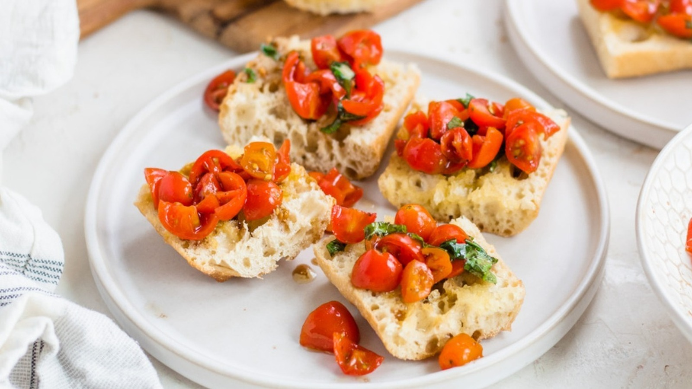

Classic Tomato Bruschetta
A timeless Italian appetizer featuring fresh tomatoes, garlic, basil, and extra-virgin olive oil on toasted bread. Simple, fresh, and bursting with flavor. 🍅
Ingredients
- 4-5 ripe Roma tomatoes, diced
- 1/2 cup fresh basil leaves, chopped
- 2 cloves garlic, minced
- 1 tbsp balsamic vinegar
- 2 tbsp extra-virgin olive oil
- Salt and black pepper to taste
- 1 baguette, sliced 1/2-inch thick
- 1 clove garlic, halved (for rubbing)
Instructions
- Prepare the Topping: In a medium bowl, combine the diced tomatoes, chopped basil, minced garlic, balsamic vinegar, and olive oil. Season with salt and pepper. Stir gently and let it sit for at least 10 minutes to allow the flavors to meld.
- Toast the Bread: Preheat your oven's broiler or a grill pan. Arrange the baguette slices in a single layer and toast for 1-2 minutes per side, until golden brown and crisp.
- Infuse with Garlic: Immediately after toasting, lightly rub one side of each bread slice with the cut side of the halved garlic clove. This adds a subtle garlic aroma and flavor.
- Assemble and Serve: Spoon the tomato mixture onto the garlic-rubbed side of the toasted bread. Serve immediately to enjoy the best texture and flavor.